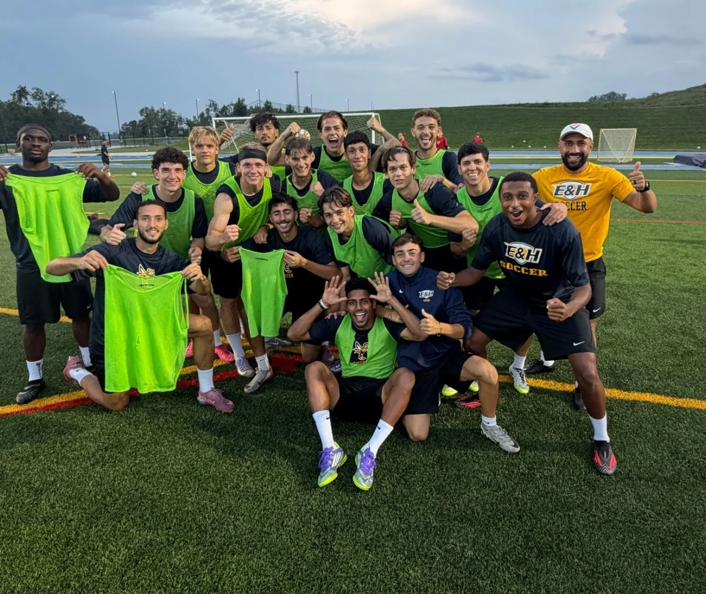
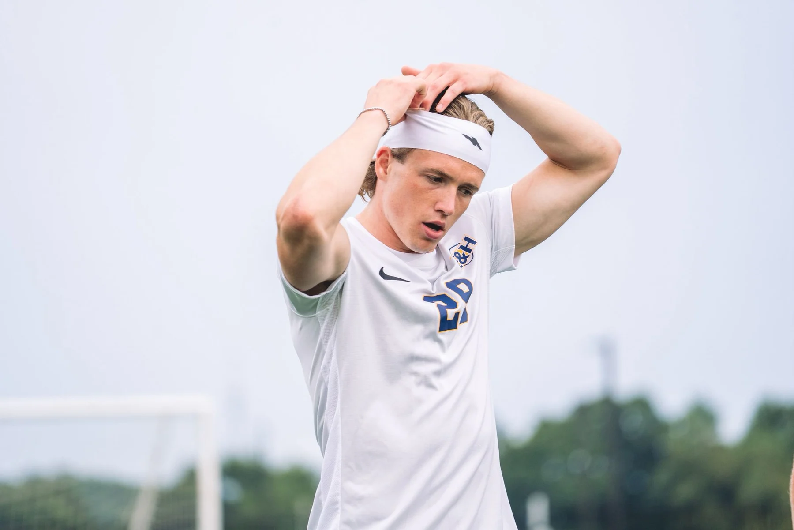

CONFERENCE SCHEDULE
2026 · THE WASPS
Every match.
Every moment.
Emory & Henry's SAC campaign, tracked from the final whistle to the next kickoff.
Overall1–1–4
SAC0–0–1
Goal diff.+1


PLAYER WATCH
GERMANY · MIDFIELDER / FORWARD
NIKLAS
BORCK
#14 · Right-footed · Born Aug 6, 2003
VERIFIED MATCH SHEETS
TEAM PULSE
Scoring balance
15.0Shots / match
6.17Corners / match
4Unbeaten run
ROAD AHEAD
Next three opponents
MATCH LOG
Completed games
| Date | Opponent | Site | Result | Score |
|---|
SOUTH ATLANTIC CONFERENCE
Current table
| # | Team | SAC | Pts | Overall | Form |
|---|
Official SAC data. Loading latest update…